Melissodes bimatris Laberge, the mothered long-horned bee, is a somewhat common North American species of Melissodes
that tends to occupy the Western portions of the United States (Laberge, 1961; Fig. 13). Like all Melissodes, male M. bimatris have long antennae,
and the females have short antennae in comparison (see "Genus" page for more information). This species resides in the subgenus Eumelissodes Laberge
and females are highly variable, but in a very distinctive manner. Unlike most variable species of Melissodes, M. bimatris females have two distinct
forms (dark and light) rather than a range of intergrades as in M. druriellus or M. rivalis, apart from a few specific characteristics. Both sexes of
M. bimatris can resemble other species in M. (Eumelissodes) Laberge, but dark females are readily identified from all other species by their overall
black to dark brown vestiture with bright ochraceous to yellowish dorsal thoracic highlights coupled with pale fluvo-ochraceous scopae (Laberge, 1961).
Lighter females, however, are fairly more challenging to identify, bearing high resemblance to those of M. ochraeus and M. semilupinus (although more
so the former than latter). Males can be distinguished from most other M. (Eumelissodes) Laberge by their shiny galeae, entirely black mandibles,
entirely yellow clypeaus apart from the tentorial depressions, fairly long first flagellar segment (in comparison to those of M. agilis or M. trinodis), hyaline tergal rims, the first
flagellar segment’s maximum length being more than one-third of the third segment’s minimum length, and the noticeably dense apical band of appressed
to subappressed hairs that obscure the apical margin across the entire tergum (see “Description and Identification” for more information on both sexes)
(Laberge, 1961). M. bimatris is seemingly an oligolege of the family Asteraceae with a strong preference towards the genus Chrysothamnus (Laberge, 1961).
However, collections have shown that M. bimatris seems to significantly prefer Ericameria (as well as Chrysothamnus) above all other floral documentations
(Carril et al., 2023; Bentley & Osborn, 2026; Illinois Natural History Survey, 2026; Kenneth S. Norris Center for Natural History, 2026; MT James
Entomological Collection, Washington State University, 2026). Given how similar the two Asteraceae genera are, this may instead reflect recent floral
taxonomic revisions (i.e. many Chrysothamnus being reclassified as Ericameria) rather than a true new specialized floral-host relationship (see “Flower
records” for more information).
Description and Identification
Based on Laberge's (1961) description, Melissodes bimatris are medium sized setaceous bees. Females range from 11 to 15 millimeters in length and 4.0 to 5.5
millimeters in width (width measured at the widest portion of the metasoma). Males are a bit smaller, being about 10 to 14 millimeters in length and 3 to 4
millimeters in width (width measured at the widest portion of the metasoma). The female's first flagellar segment is on average 1.96 times the size of the
second flagellar segment (standard deviation 0.022). The males are the opposite where the second flagellar segment is on average 4.68 times the size of the
first flagellar segment (standard deviation 0.089). Female wing length is 4.10 millimeters on average (standard deviation 0.150 millimeters), and male wing
length is 3.88 millimeters on average (standard deviation 0.167 millimeters). Females have an average of 14.75 hamuli (standard deviation 0.298), while males
have an average of 13.30 (standard deviation 0.219).
Female
According to Laberge (1961), the description of female M. bimatris is as follows. The integument is black, differing at the eyes, which are gray (although not
from Laberge, 1961, a dark blue eye color is common as well); the wing membranes, which are colorless to finally milky hyaline; the wing veins, which are black to
dark brownish red; the underside of flagellar segments 3-10, which are somtimes rufescent, but often entierly black to dark brown; the apical one-half of the mandibles, which are rufescent; the tibial spurs,
which are pale yellow to colorless hyaline; the distitarsi, which are rufescent; and the apical area of the first tergum, which has a narrow hyaline margin. The
clypeus is rather flat and usually has a medial longitudinal carina. The oculoclypeal distance is less than, or equal to, half the first flagellar segment’s diameter.
The clypeus is somewhat dull due to coarse reticular shagreening (including the bottom of the punctures) and has shallow, round, coarse punctures that are mostly
separated by less than one-half of a puncture diameter. The flattened lateral areas of the vertex are shiny and have irregularly sized, overall small punctures that are mostly
separated by one-half to two puncture diameters. The width of the second flagellar segments is moderately wider apically than its median length ventrally, or the length
and the width are approximatly the same; the length is never greater than the apical width (Fig. 1). The four
maxillary palpal segments decrease in length from basal to apical in a ratio of about 3.0:2.7:2.3:1.0. The galeae are shiny and unshagreened dorsally or faintly and delicately shagreened in less than, or equal to,
the apical half. The mesoscutum is shiny with sparse to no shagreening (Fig. 2) and bears deep large punctures that
vary in size, but are mostly separated by one-half to one puncture diameter. The large posteromedian area of the mesoscutum is also distinctly shiny with no shagreening, and bears punctures that tend
to be slightly larger and sparser than the rest of the mesoscutum; these punctures are separated by at least one and usually by more than two puncture diameters.
Punctures of the scutellum are similar to the punctures on the mesoscutum, but tend to be slightly more crowded. The metanotum is dulled due to very fine reticular shagreening
and bears punctures that are half the diameter of the punctures on the scutellum; these punctures are mostly separated by one-half to one puncture diameter. The propodeum’s
dorsal surface is reticulorugose, especially coarsely so basally, and the posterior surface bears coarse punctures apart from the upper impunctate triangle. The lateral surfaces of
the propodeum are similar to its posterior surface, but the punctures are more crowded and the surfaces are dulled due to dense, regular tessellation. The mesepisternum’s lateral
surface bears punctures that are large, shallow, and mostly separated by half a puncture diameter or less. The surface of the mesepisternum is shiny with somewhat indistinct, incredibly
sparse, delicate shagreening.
The first tergum’s basal three-fifths or slightly less is dulled due to fine tessellation and the basal two-thirds or more is medially punctate (Fig. 3). These punctures are round,
shallow, and separated mostly by one-half to one and one-half puncture diameters; punctures can extend to the apex at extreme sides. The apical area of the first tergum
is impunctate with a shiny, extremely finely reticulotransversely shagreened surface. The second tergum’s basal zone is shiny with fine reticular shagreening
and bears tiny round punctures that are separated by one to half a puncture diameter. The interband zone of the second tergum is dulled due to reticulotransverse shagreening and bears
small irregular punctures that are separated by one to three puncture diameters; these punctures are sparser medially than in the lateral raised areas. The apical area of
the second tergum is moderately shiny, but dulled due to fine reticulotransverse shagreening and bears minute punctures that are no wider than the bases of the hairs that arise
from them. These minute punctures are located at minimum near the distal bands, sometimes reaching farther apically, and are separated by two to four puncture diameters. The third tergum is similar
to that of the second, but the punctures of the interband zone are relatively more distinct and abundant. The fourth tergum is similar to that of the third, but the apical
area is usually impunctate, or if punctate, then only bearing minute punctures that are no wider than the base of the hairs that arise from them and are separated by two to four
puncture diameters. The pygidial plate is broadly V-shaped with a rounded apex and is about two-tenths longer medially than the width of its base.
Two setal variations of M. bimatris are present across its range (dark and light) in a seemingly unpredictable and somewhat homogenous way, suggestive of no subspecific
separation (Fig. 4). Interestingly, M. bimatris seems to exhibit forms of intergradation in multiple characteristics such as the head hairs, metasomal hairs, and thoracic hairs.
However, intergrades seem somewhat less common in comparison to the two extremes, a strange scenario given the presence and intermixture of both extremes across similar
areas. Furthermore, given the binary nature of the intergrade characteristics (no real “graying” seems to occur, rather a few pale characteristics may be found on an entirely
dark individual), it’s fairly reasonable to assume that some sort of codominance is occurring within their setal color alleles; this seems
almost contradictory to the findings above. More genetic research is needed to determine the full spectrum M. bimatris’ dimorphism. The palest M. bimatris individuals have
entirely pale ochraceous head hairs with no distinctive vertex, clypeal, or mandibular darkening. The thoracic hairs are mostly white to very pale ochraceous in the lateral,
as well as the posterior areas, becoming fairly rufescent to pale ochraceous dorsally; no dark patch present (Fig. 5). The first tergum’s basal area has long, pale ochraceous hairs that reach the
apical margin on extreme lateral areas, but not medially. However, the apical portion of the basal area bears long fairly appressed hairs that reach and often extend past the
apical margin (often medially worn); these hairs still basal and not forming an apical band. The apical area of the first tergum is glabrous. The second tergum’s pale ochraceous basal pubescence is distinctly separated from the
distal band across most of the tergum, but the two laterally connect. The interband zone of the second tergum bears rather simple, suberect to erect ochraceous hairs; this area distinctly not bearing
subappressed to appressed plumose hairs as in M. ochraeus. The distal pale ochraceous pubescent band of the second tergum is two times the length of the apical glabrous area laterally, and medially,
the band is narrowed and notched measuring only half the length of the apical glabrous area. The third tergum is similar to that of the second, except the basal tomentum is dark
brown and the distal pale band is largely separated from the apical margin. The apical area of the third tergum is approximately as wide at the distal pale band medially and glabrous, apart from a few suberect hairs that are sometimes
present near the distal most area of the pubescent band (Fig. 6). The fourth tergum is similar to that of the third, but the
distal pale band reaches the apex across the entire tergum and is distinctly medially narrowed with the basal dark pubescence often being wider than the band (be it not always). The fifth and sixth
terga are entirely covered in brown hairs and often have no (or very small) white lateral tufts. The leg hairs are mostly white to pale ochraceous except for the fore tarsi,
which are dark reddish brown to brown; the outer apical area of the fore tibiae and middle tibiae, which are dark reddish brown to brown; the basitibial plates and the surrounding
areas, which are dark reddish brown to brown; the inner surfaces of the hind basitarsi, which are brownish red to sometimes entirely red; and the scopal hairs, which are often
pale yellow, sometimes pale ochraceous, and incredibly long. The darkest M. bimatris individuals have entirely black to dark brown head hairs (Fig. 7). The thoracic hairs are completely
black to dark brown except as follows: the dorsal thoracic areas apart from the tegulae, anterior mesoscutal surface, and propodeum, which are pale rufescent to pale ochraceous
with no dark thoracic patches (Fig. 7). The vestiture of the metasoma is completely black to dark brown and the apical portion of the basal area bears long fairly appressed hairs that
reach and often extend past the apical margin (often medially worn; Fig. 8). The leg hairs are black to dark brown, differing at the scopae, which are ochraceous yellow apart from the
hairs at the apical basitarsal areas and around the basitibial plate (presented as “pygidial plate” in Laberge, 1961, however, this seems to be a possible typo as the pygidial
plate has no relation to leg vestiture and the basitibial plate is a known morphological characteristic that bears darkened hairs on other species of Melissodes); the inner
surfaces of the hind tibiae, which are also ochraceous to yellow; the inner surfaces of the hind basitarsi, which are black to dark brown (distinctly contrasting with scopae);
and the hind femora, which are somewhat paler on the dorsal areas (Fig. 9).
M. bimatris ranges in setal color between these two dark and pale descriptions. As this species progressively lightens from the dark extreme to
the pale extreme, pale tergal, thoracic, and facial hairs start to appear. To describe these variations, 10 characteristics each having two (and three on the thoracic hair
characteristic; see note) different levels of melanism derived from descriptions of Laberge (1961) are listed below rather than writing singular descriptions for each theoretical
variety (1,536 or 2^9*3 possible morphs). These are listed in the table below (table 1). Traits of differing levels of melanism are meant to be applied to, and override portions
of, the base-line description above. Note that each value per character (light, intermediate, or dark) is treated as being independent from one another (although, many are likely highly
correlated). Therefore, a female M. bimatris may have all of its head hairs dark (darkest choice for the first character), and also have a pale band across the fourth tergum (palest
choice for the sixth character); howeer, this combination has never been documented. Many characteristics have only two variations, one for the darkest and one for the lightest extreme,
somewhat indicative of codominance rather than an incomplete dominance.
Note: the thoracic vestiture is the only included character that has an intermediate variation. However, this character isn’t a darkish gray color as it would be if M. bimatris
expressed incomplete dominance, but rather an even mix of both extremes, supporting the original hypothesis.
Table 1. A table of Melissodes species with their citations to the resource which documents their occurance in Oregon.
Character
Light
Intermediate
Dark
Labral and mandibular hairs
Only pale hairs present.
Only dark hairs present.
Clypeal hairs
Only pale hairs present.
Only dark hairs present.
Vertex hairs
Mostly pale hairs present.
The majority of the hairs are dark, often extending downward in the genal areas creating an entirely dark head.
Thoracic hairs
The thoracic hairs are mostly white to very pale ochraceous in the lateral as well as the posterior areas, becoming fairly rufescent to pale ochraceous in the dorsal areas.
The thoracic hairs are mostly white to very pale ochraceous in the upper lateral areas (dark in the lower lateral areas), becoming fairly rufescent to pale ochraceous in the dorsal areas.
The thoracic hairs are completely black to dark brown except as follows: the dorsal thoracic areas apart from the tegulae, anterior mesoscutal surface, and propodeum, which are pale rufescent to pale ochraceous (no dark thoracic patches).
Hairs on the base of the second tergum
Pale hairs present and abundant.
Mostly to entirely black to dark brown.
Hairs on the base of the first tergum
Pale hairs present and abundant.
The majority to all of the hairs are black to dark brown.
Distal pale band of the second tergum
Pale hairs are distinctly present to all of the hairs are pale.
The majority to all of the hairs are black to dark brown.
The distal band of the third tergum
Pale hairs are distinctly present to all of the hairs are pale.
The majority to all of the hairs are black to dark brown.
Hairs on the fourth tergum
The entire band is distinctly pale, only a few, if any, dark hairs are present (likely these hairs are basal to the band, not truly constituting as the band).
The entire band is black.
The distal band of the third tergum
The majority of the leg hairs are distinctly pale, not all of a similar color, but pale non-the-less.
The leg hairs are almost entirely black to dark brown with bright ochraceous to fluvo-ochraceous scopae on the hind legs.
It’s still unknown to what degree M. bimatris females truly vary. From the specimens available at his time of publication, Laberge (1961)
listed 173 females, 169 of which were the two extremes (96 dark and 73 light), 14 of which were intermediate-dark, 7 of which were intermediate, and 9 of which were intermediate-pale.
97.7% of Laberge’s (1961) female M. bimatris material either extreme, and given the extensive sampling across their ranges, this seems to reflect a natural phenomena. Taking the strikingly low ratio of intergrades to extremes into consideration
this is possibly indicative of a cryptic species and/or a supergene. A genetic study will need to occur to determine the full breadth of phenotypic
variation in M. bimatris females.
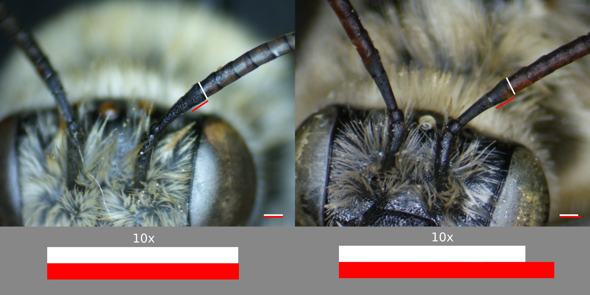
Photo credit: Photo credits: Christopher Wilson (All Rights Reserved).
Fig. 1. A labeled diagram showing the length of the second flagellar segment of females of M. bimatris (left) in comparison to
those of M. menuachus, demonstrating the apical width and ventral lengh are approximatly equal in M. bimatris. The red lines are indicative of the ventral length and the white lines indicate the apical width.
An enlarged width/length comparison (10x) is given below each female. Photo credit: Christopher Wilson (All Rights Reserved).
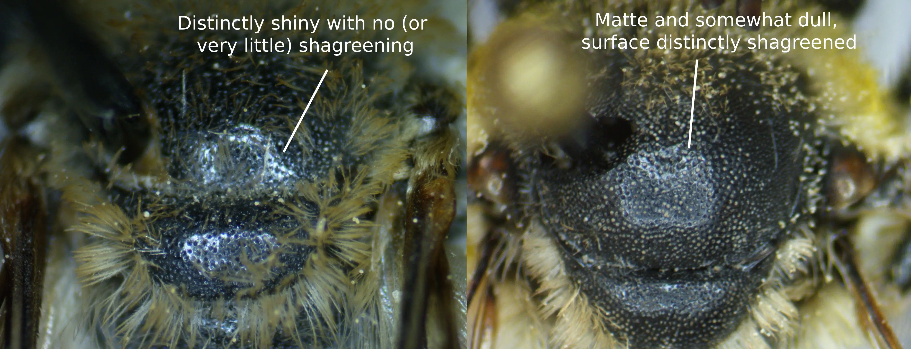
Photo credit: Photo credits: Christopher Wilson (All Rights Reserved).
Fig. 2. A comparison of the mesoscutal sculpturing of a femal M. bimatris (left), and a female M. trinodis (right), illustrating the shiny nature of the mesoscutum of the female M. bimatris. Photo credits: Christopher Wilson (All Rights Reserved).
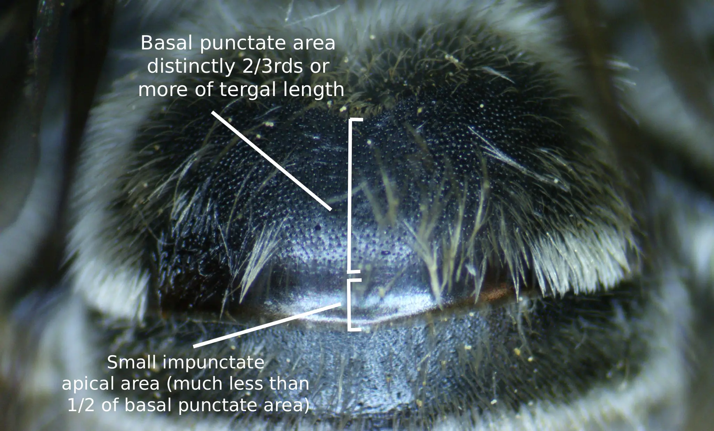
Photo credit: Photo credits: Christopher Wilson (All Rights Reserved).
Fig. 3. A labeled diagram showing the ratio of the basal punctate area to the impunctate apical area of the first tergum of a female M. bimatris. Photo credits: Christopher Wilson (All Rights Reserved).
Fig. 4. A labeled diagram showing the two distinct M. bimatris morphs (dark and light). Photo credits: (left) Lori Weidenhammer (CC-BY-NC); (right) Christopher Wilson (All Rights Reserved).
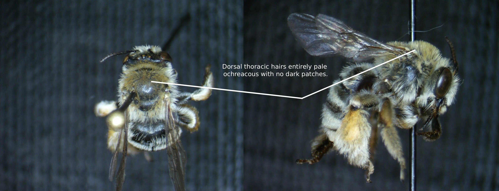
Photo credit: Photo credits: Christopher Wilson (All Rights Reserved).
Fig. 5. A labeled diagram showing the coloration of the dorsal thoracic hairs of a pale female M. bimatris. Photo credits: Christopher Wilson (All Rights Reserved).
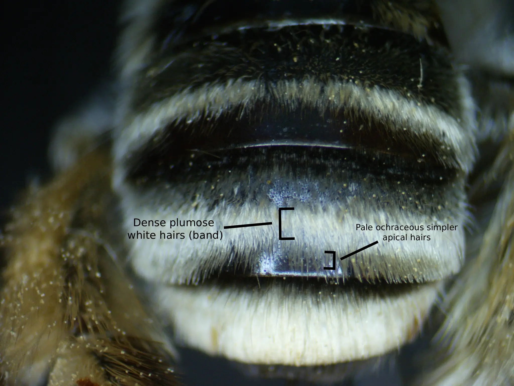
Photo credit: Photo credits: Christopher Wilson (All Rights Reserved). Figure Gallery ➜')">
Fig. 6. A labeled diagram showing the presence of pale ochraceous simple apical hairs on the third tergum of a pale female M. bimatris. Photo credit: Christopher Wilson (All Rights Reserved).
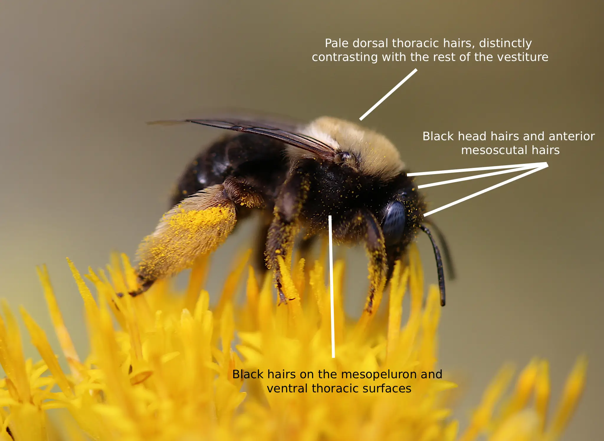
Photo credit: Lori Weidenhammer (CC-BY-NC). Figure Gallery ➜')">
Fig. 7. A labeled diagram showing the head and thoracic vestiture of a dark female M. bimatris. Photo credit: Lori Weidenhammer (CC-BY-NC).
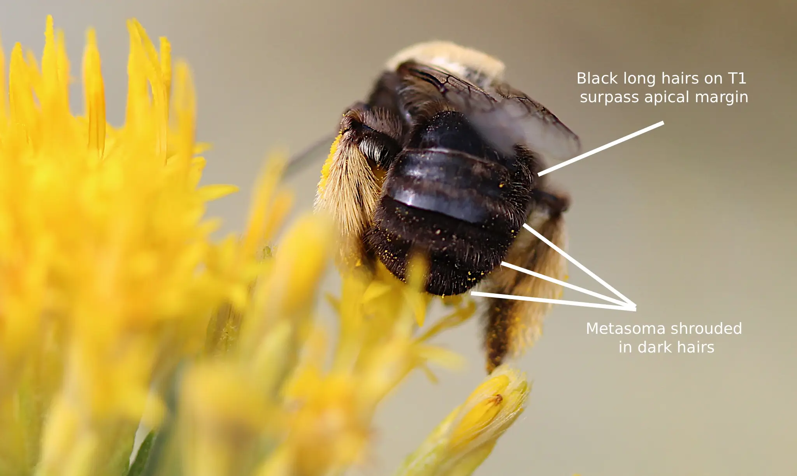
Photo credit: Lori Weidenhammer (CC-BY-NC). Figure Gallery ➜')">
Fig. 8. A labeled diagram showing the metasomal vestiture of a dark female M. bimatris. Photo credit: Lori Weidenhammer (CC-BY-NC).
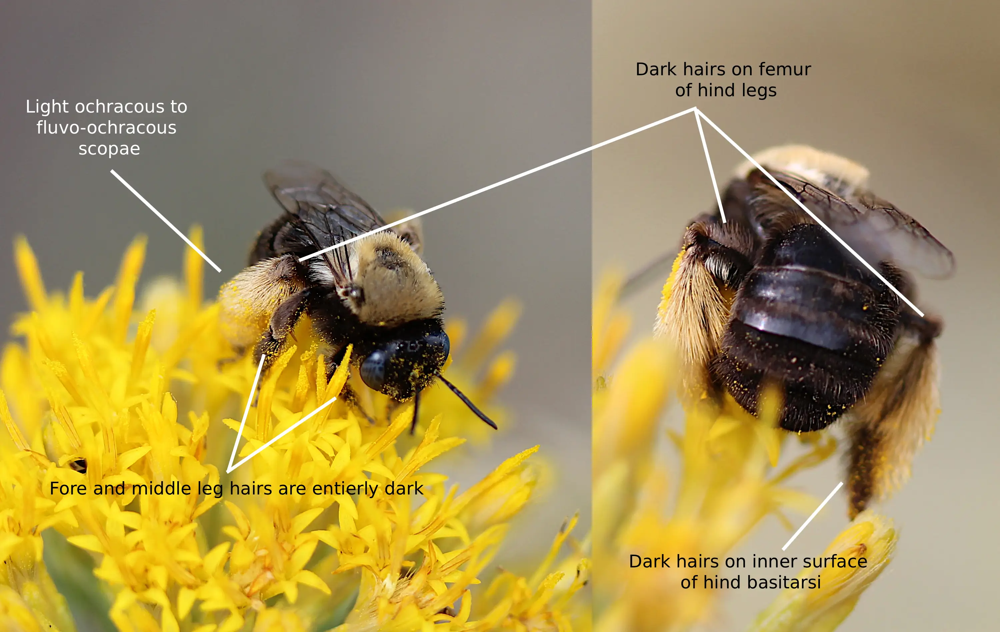
Photo credits: Lori Weidenhammer (CC-BY-NC). Figure Gallery ➜')">
Fig. 9. A labeled diagram showing the leg vestiture of a dark female M. bimatris. Photo credits: Lori Weidenhammer (CC-BY-NC).
Male
According to Laberge (1961), the description of male M. bimatris is as follows. The integument is black, differing at the eyes, which are green to gray; the
clypeus, which is yellow apart from the usually piceous apical margin; the labrum, which is usually completely black, although sometimes a small pale
maculation positioned mediobasally may be present (Fig. 10); the wing membranes, which are colorless hyaline; the wing veins, which are black to dark reddish brown; flagellar segments
2-10, which are red to yellow ventrally and dark red to dorsally (first segment completely dark brown); the distitarsi, which are rufescent; the tegulae,
which are piceous; and the apices of the terga, which are colorless to yellow hyaline. The mandibular bases are completely dark, bearing no yellow macula (Fig. 10). The clypeus protrudes beyond the eye by about half the width of an eye in
profile view. The first flagellar segment’s minimum length is about two-thirds of its maximum length and about one-fifth to somewhat less of the maximum length
of the second segment (Fig. 11). The penultimate segment is about three times as long (maximum) as it is wide (minimum). Flagellar segments 8-10 or 7-10 are somewhat crenulate,
similar to that of M. semilupinus. No segments bear longitudinal lateral depressions. The four maxillary palpal segments decrease in length
from basal to apical in a ratio of about 4.0:3.5:3.5:1.0. The remainder of the sculptural characteristics are similar to that of the female except as follows: the
basal punctures of the first tergum extend past the basal five-sixths medially; the punctures of the second and third terga are often more crowded and somewhat coarser.
The 7th sternum’s median plate is subtriangular, slightly larger than the lateral plate, and the apical margin is medially inclined. The lateral plate of the 7th sternum
is also subtriangular. The 7th sternum’s median plate also bears abundant minute ventral hairs that are coarse and long basally, a few hairs that become curled and inwardly
directed from the dorsal areas of the basal areas inner angle, and sparser fairly delicate mediobasal hairs; these hairs are sparser and more slender than those of M.
dentiventris. The membranous area between the plates is narrow and almost half the size of the lateral plate. The apicomedial margin located between the median plates has
strongly curved carinae on each side. The 8th sternum is broad near the apex, has several to many hairs on the apical margin, distinctly emarginate apicomedially, and the
ventral tubercle usually isn’t apically bidentate, but is cariniform. The ventral tubercle does not reach the apical margin of the 8th sternum. The gonostylus is slender,
tapers apically, bears short, blunt, sparse, hairs basally on the ventral surface; short, stout, bifid or trifid hairs apically; and isn’t distinctly capitate. The length of
the gonostylus is approximately half the length of the gonocoxite. The spatha is about three times as wide as it is long. At least half of the spicules of the upper inner
surface of the gonocoxite are short and blunt, the rest being hairlike. The ventral surface of the gonocoxite below the gonostylus lacks stout, blunt, short
spicules apically (differing from that of M. menuachus). The penis valve has a prominent dorsolateral lamella; the basal end of the lamella ends in an inflected tooth near
the spatha.
Unlike their female counterparts, males of M. bimatris do not distinctly range in vestiture, the description of which follows. The hairs on both the head and the thorax are white to pale ochraceous, but on the vertex of the head and the dorsal area
of the thorax, the hairs usually become a bit darker. The first tergum has long, basal, white to ochraceous hairs and long, appressed to subappressed, apical pale
hairs that reach and obscure the apical margin across the entire tergum (so long as they aren’t worn off; Fig. 12). The second tergum bears white basal pubescence and pale,
erect, bristle-like hairs on the interband zone. The distal pubescent band of the second tergum is not interrupted medially and often narrower than the apical
area. The apical area of the second tergum bears many suberect pale hairs. Terga 3-5 are similar to that of the second tergum, apart from the interband zones,
which in addition to the bristle-like hairs also bear delicate, sparse, white, appressed pubescence; interband zone hairs suberect instead of erect. Also,
the distal bands of terga 3-5 become closer to the apical margin with each subsequent terga. The sixth and seventh terga are covered in yellowish to white pubescence.
The sternal hairs are medially reddish to pale ochraceous, and laterally white. The legs bear white to ochraceous hairs apart from yellow inner surfaces of
the tarsi. Two males have been found to have pale rufescent to yellow-ochre and brownish red pubescence basally on terga 3-5.
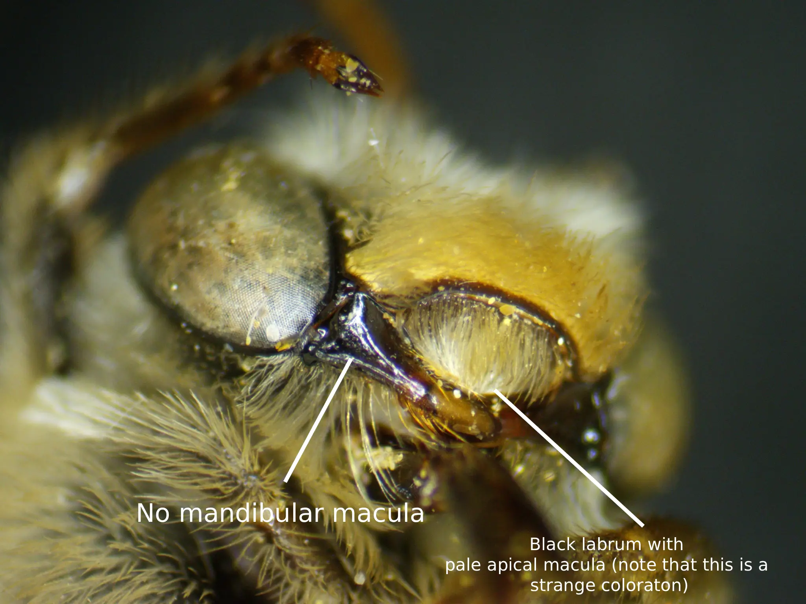
Photo credit: Photo credits: Christopher Wilson (All Rights Reserved). Figure Gallery ➜')">
Fig. 10. A labeled diagram showing the integumental coloration of the labrum and mandibles of a male M. bimatris. Photo credits: Christopher Wilson (All Rights Reserved).
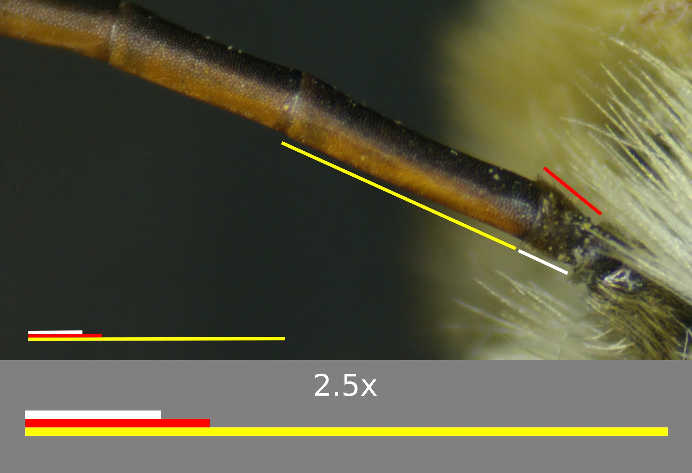
Photo credit: Photo credits: Christopher Wilson (All Rights Reserved). Figure Gallery ➜')">
Fig. 11. A diagram showing the ratio of flagellar lengths of a male M. bimatris. The yellow line is indicative of the longer side (maximum length) of F2, the red line indicates the longer side of F1, and the
white line represents the shorter side of F1. These flagellar ratios are as described above, but the short side of F1 is slightly longer than two thirds of the maximum length of the same segment (this is still representative of a regular M. bimatris). An enlarged width/length comparison (2.5x) is given. Photo credits: Christopher Wilson (All Rights Reserved).
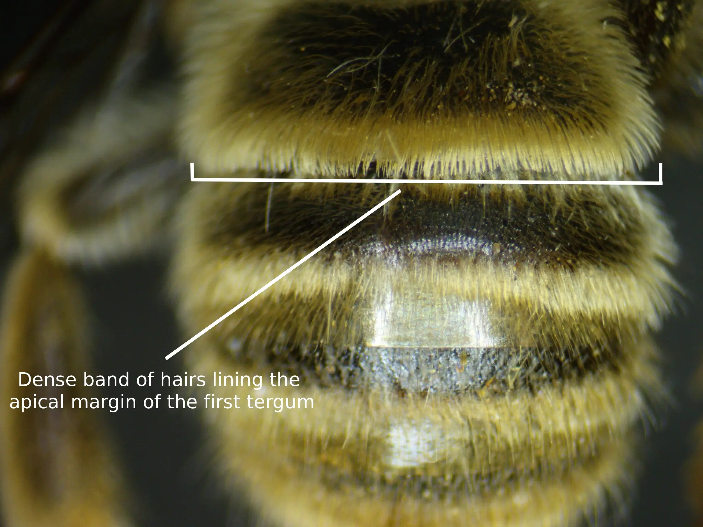
Photo credit: Photo credits: Christopher Wilson (All Rights Reserved). Figure Gallery ➜')">
Fig. 12. A labeled diagram showing the dense appressed apical band of hairs on the first tergum that obscures the apical margin across the entier tergum of a male M. bimatris. Photo credits: Christopher Wilson (All Rights Reserved).
Location and Habitat
Melissodes bimatris is a somewhat uncommon, although not elusive, species that seems to occur across the majority of the western areas of the United States (Fig. 13).
In his revision, Laberge (1961) documented the range of M. bimatris to include the following states and provinces: California, Nevada, Utah,
Oregon, Washington, Idaho, Arizona, British Columbia and New Mexico; noting that a male collected in Colorado has been identified as M. bimatris, although the specimen is in fairly
poor condition and therefore cannot be determined with 100% certainty. A similar distribution can be seen today, however, this species has been collected in an
additional 4 states; 3 somewhat eastward of its original proposed range and 1 distinctly east. Currently, M. bimatris has been found in the listed states above
with the addition of Montana (Ikerd, 2019), Wyoming (Illinois Natural History Survey, 2026), Colorado (Ikerd, 2019, with a number of definitive specimens), and Kansas
(Bentley & Osborn, 2026; see Fig. 2). Although it’s unknown the habitats in which M. bimatris resides, its host-plants, Ericameria and Chrysothamnus
(see “Flower records for more detail), are known to inhabit dry areas (Scheinost et al., 2010), “desert to semi-desert habitats" (Tirmenstein, 1999; Tilley et
al., 2012), and tend to be found in regions with “dry, well-drained medium to coarse-textured soils” as noted by Tirmenstein (1999). Specifically, the species
Chrysothamnus viscidiflorus has been documented in a range that can be drawn from Texas, Arizona, and North Dakota, west to California, and north towards British
Columbia (Tirmenstein, 1999), a very similar distribution to that of M. bimatris. Given this, it’s reasonable to assume that M. bimatris occupies similar habitats to its preferred floral genera,
likely being found in and around large aggregations of these plants. Currently, the only phenological activity published for M. bimatris states that this species has been
documented to be active throughout the months of June to November, the latest specimen being collected on the 8th of the latter month, with peak activity likely
occurring in September (Laberge, 1961). Newer data seem to indicate a very similar pattern, the only distinct difference being that
M. bimatris has been collected as early as May; although, these collections are few (Fig. 14).
Fig. 13. Map showing an estimation for the known distribution for M. (Eumelissodes) bimatris. Each point represents
1 or more occurrences; occurrences that don't have coordinates are not included. Data derived from (Ikerd, 2019; Johnson, 2020; Carril et al., 2023; Texas A&M University Insect Collection, 2023; Bentley & Osborn, 2026; Brigham Young University, Arthropod Collection, 2026; Gibbs, 2026; Grinter et al., 2026; Gross & Oboyski, 2026; Illinois Natural History Survey, 2026; Kenneth S. Norris Center for Natural History, 2026; Mertz et al., 2026; MT James Entomological Collection, Washington State University, 2026; Museum of Southwestern Biology, 2026; Orrell & Informatics, 2026; The International Barcode of Life Consortium, 2026; University of Arizona Insect Collection, 2026). Data licensed under CC BY 4.0, CC BY-NC 4.0, and CC0 1.0.
Fig. 14. A figure showing the phenological activity of M. bimatris. The x value is the month, and the y value is the number of documented observations. Data derived from (Ikerd, 2019; Johnson, 2020; Carril et al., 2023; Texas A&M University Insect Collection, 2023; Bentley & Osborn, 2026; Brigham Young University, Arthropod Collection, 2026; Gibbs, 2026; Grinter et al., 2026; Gross & Oboyski, 2026; Illinois Natural History Survey, 2026; Kenneth S. Norris Center for Natural History, 2026; Mertz et al., 2026; MT James Entomological Collection, Washington State University, 2026; Museum of Southwestern Biology, 2026; Orrell & Informatics, 2026; The International Barcode of Life Consortium, 2026; University of Arizona Insect Collection, 2026). Data licensed under CC BY 4.0, CC BY-NC 4.0, and CC0 1.0.
Bionomics
No publications have currently concerned themselves with the studies of nesting
behaviors or bionomics of M. bimatris. From the data available, M. bimatris seems to
occupy elevations ranging between 51m (University of Arizona Insect Collection, 2026;
GBIF record 4070489082) and 2,283m (Carril et al., 2023; GBIF record 3421504713).
One observation was documented in Whitney Portal, California (Illinois Natural History
Survey, 2026; GBIF record 3801936780), which, in accordance to the National Geodetic
Survey, is approximately 2,552.5m. However, this record contains no reports of
elevation, and the supposed elevation may therefore be wrong. For this reason, the
elevation range of M. bimatris will herein be documented as 51-2,283 meters. Taking
into account the codependency of M. bimatris and their preferred floral hosts, the
location of Ericameria and Chrysothamnus may dictate the soil in which M. bimatris
nests. As it has been documented that one of the two flower genera (Chrysothamnus)
often occupy areas with “dry, well-drained medium to coarse-textured soils”
(Tirmenstein, 1999), and that the flight range of other Melissodes species (M. agilis)
predicted to be 14-16m (Foy, 2025), it’s fairly reasonable to assume that M. bimatris
nests near their floral hosts and in turn nests within the Ericameria and
Chrysothamnus’ preferred soil type. More research is needed to fully understand
the ecology of M. bimatris.
Flower records
At the time of his publication, Laberge’s (1961) M. bimatris material consisted of 144 specimens bearing floral data.
From this, it was determined that M. bimatris is oligolectic towards Asteraceae and has a strong preference, and a possible
specialization, to the genus Chrysothamnus due to the overwhelming number of collections from this taxon (121 M. bimatris
collected atop Chrysothamnus; 84.02%). The remainder of the records consisted of miscellaneous genera and species with no
significant values (Laberge, 1961). The records given in full by Laberge (1961) consisted of 23 floral taxa, 10 of which belong to
Chrysothamnus (at least historically classified as such). These will be listed in full below. Unlike many of his other
species treatments, Laberge (1961) opted to omit a table representing the frequencies of a specific floral taxon within his
database, likely due to the substantial Chrysothamnus preference observed. In this treatment, a diagrammatic representation of M.
bimatris’ floral frequency will be presented, the data derived from 5 datasets containing 435 floral records. To preface this, a list of
all current records will be listed with updated taxonomy. All flower records included in this list are from reports in the literature
or datasets. Each flower has a parenthesized reference listed after it, corresponding to the literary work or dataset in which it was
recorded. Artemisia (Laberge, 1961; presented as “Artemesia sp.” a likely misspelling), Aster sp. (Laberge, 1961), Centromadia pungens
(Laberge, 1961), Chrysothamnus sp. (Laberge, 1961), Chrysothamnus depressus (Carril et al., 2023; GBIF record 3421470407), Chrysothamnus
greenei (Carril et al., 2023; GBIF record 3421476005), Chrysothamnus viscidiflorus (Laberge, 1961), Cleome sp. (Bentley & Osborn, 2026;
GBIF record 1092783623), Dieteria canescens (MT James Entomological Collection, Washington State University, 2026; GBIF record 5141264369),
Ericameria arborescens (Kenneth S. Norris Center for Natural History, 2026; GBIF record 2562700965), Ericameria nauseosa (Laberge, 1961;
old synonym), Ericameria nauseosa var. hololeuca (Laberge, 1961; old synonym), Ericameria nauseosa var. mohavensis (Laberge, 1961; old synonym),
Ericameria nauseosa var. oreophila (Laberge, 1961; old synonym), Ericameria nauseosa var. speciosa (Laberge, 1961; old synonym), Ericameria
palmeri (Laberge, 1961), Ericameria parryi (Laberge, 1961; old synonym), Eriogonum sp. (Laberge, 1961), Eriogonum corymbosum (Carril et al.,
2023; GBIF record 3421474744), Eriogonum niveum (MT James Entomological Collection, Washington State University, 2026; GBIF record 5141245332),
Euthamia occidentalis (MT James Entomological Collection, Washington State University, 2026; GBIF record 5141245528), Frangula californica subsp.
californica (Laberge, 1961; old synonym), Grindelia sp. (Bentley & Osborn, 2026; GBIF record 657745275), Grindelia squarrosa (Carril et al., 2023;
GBIF record 3421471768), Gutierrezia californica (Laberge, 1961), Gutierrezia microcephala (Laberge, 1961; old synonym), Gutierrezia sarothrae
(Laberge, 1961), Helianthus sp. (Laberge, 1961), Helianthus annuus (MT James Entomological Collection, Washington State University, 2026; GBIF
record 5141248520), Helianthus petiolaris (Carril et al., 2023; GBIF record 3421462589), Heliomeris multiflora (Carril et al., 2023; old synonym;
GBIF record 3421470197), Heterotheca villosa (Carril et al., 2023; GBIF record 3421529497), Hymenopappus filifolius (Carril et al., 2023; GBIF
record 3421453033), Isocoma sp. (Bentley & Osborn, 2026; GBIF record 1899931729), Isocoma acradenia (Laberge, 1961), Linum subteres (Carril et al., 2023;
GBIF record 3421498262), Lorandersonia linifolia (Carril et al., 2023; old synonym; GBIF record 3421490589), Melilotus albus (MT James Entomological
Collection, Washington State University, 2026; GBIF record 5141240281), Monardella odoratissima (MT James Entomological Collection, Washington State
University, 2026; GBIF record 5141240382), Nepeta cataria (MT James Entomological Collection, Washington State University, 2026; GBIF record 5141245871),
Senecio sp. (Laberge, 1961), Senecio flaccidus (Carril et al., 2023; GBIF record 3421437355), Senecio spartioides (Carril et al., 2023; GBIF record
3421530397), Stephanomeria (Carril et al., 2023; GBIF record 3421444041), Stephanomeria exigua (Carril et al., 2023; GBIF record 3421464009), Stephanomeria
tenuifolia (Carril et al., 2023; GBIF record 3421496314), Thelypodium integrifolium (Carril et al., 2023; GBIF record 3421472728).
Fig. 15. A graph showing the raw current-day known floral data of M. (Eumelissodes) bimatris from 5 datasets. Data derived from (Carril et al., 2023; Bentley & Osborn, 2026; Illinois Natural History Survey, 2026; Kenneth S. Norris Center for Natural History, 2026; MT James Entomological Collection, Washington State University, 2026). Data licensed under CC BY-NC 4.0 and CC BY 4.0.
Fig. 16. A graph showing unique events of current-day known floral data of M. (Eumelissodes) bimatris from 5 datasets. Each floral taxon is filtered to only include records
with unique latitudes, longitudes or dates in an attempt to prevent single-site sampling bias. Data derived from (Carril et al., 2023; Bentley & Osborn, 2026; Illinois Natural History Survey, 2026; Kenneth S. Norris Center for Natural History, 2026; MT James Entomological Collection, Washington State University, 2026). Data licensed under CC BY-NC 4.0 and CC BY 4.0.
From what is apparent in the graphs above, M. bimatris seems to be an Asteraceae oligolege with a distinct preference of the genera Ericameria and
Chrysothamnus (Figs. 15 & 16). The latter of these taxa was originally presumed to be the sole genus on which M. bimatris specialized (Laberge, 1961),
but these newer data seem to suggest otherwise. However, Ericameria and Chrysothamnus are both incredibly closely related, the former now containing
many taxa that were originally believed to be Chrysothamnus (Nesom & Baird, 1993) at the time of Laberge’s (1961) publication. The combination of these
floral taxa account for approximately 70.43% of all records, and of the total families on which M. bimatris was collected, Asteraceae accounts for
approximately 95.35%; the remaining six families only having 1-2 records each.
Taxonomy and Phylogeny
Unlike many other Melissodes, M. bimatris has no significant taxonomic history. This species was first added to the genus by Laberge (1961) and has had no since revisions.
However, Laberge (1961) did note that prior to his publication, he had separated both extremes of the females into separate species (a reasonable assumption). While he
recognized both morphs as a single taxon (further validated by the presence of intergrades as described above), Laberge (1961) also clarifies that a possibility of cryptic
taxa and/or two separate species still exists. Due to the lack of a latin suffix appended to the root, M. bimatris did not undergo a taxonomic epithet reclassification with
the addition of article 30.1.4.4 in the 1999 release of the International Commission on Zoological Nomenclature (ICZN).
The female holotype, of which is the pale morph, was collected on the seventh of September, 1957 by E. G. Linsly near Ravendale, Lassen County, California. This female was
found atop “Chrysothamnus nauseosus speciosus,” currently Ericameria nauseosa var. speciosa, and is deposited in the University of California’s collection at Berkeley. Along
with the female holotype, two other female paratypes, one of which is of the few intermediates ever collected, were found on the same date, by the same collector, in the same
area. The male allotype was collected 3 miles south, on the same date of the female holotype by B. J. Adelson, and is noted to be visiting “Chrysothamnus nauseosus consimilis,”
currently Ericameria nauseosa var. oreophila; deposited in the University of California’s collection at Berkeley.
Similar Taxa
The mix of M. bimatris’ western range and drastically different forms can lead to some taxonomic confusion. Laberge (1961) noted that both sexes of M.
bimatris often resemble other Eumelissodes and Callimelissodes in a multitude of characters, the primary examples of which are M. bicoloratus (female dark form), M.
nigracauda (female dark form), M. ochraeus (female light form & males), and M. semilupinus (female light form & males). Although M. bimatris’
description has already been treated above, a subsequent comparison of diagnostic differences among the foregoing species may shed light on some important differences.
The distribution of M. bimatris, M. nigracauda, M. bicoloratus, M. ochraeus, and M. semilupinus overlap in Arizona, California, Nevada, and Colorado, but when
omitting M. ochreaus data, the remaining species can be found in almost every state west of Colorado (see citation block below for datasets). Most of these
species share a strikingly similar phylogeny and flower preference (such as M. bimatris, M. semilupinus, and M. ochreaus) with peak activity occurring around
September for most species (however, M. bicoloratus’ peak occurs during July; see citation block below for datasets). For these reasons, comparisons focusing
purely on diagnostic traits will be given below. Due to the two distinct forms, females will be given two sections, one for their darkest morphs and one for their palest.
Citation block: (Ikerd, 2019; Johnson, 2020; Carril et al., 2023; Ikerd & Engler, 2023; Texas A&M University Insect Collection, 2023; Scott, 2025; Bentley & Osborn, 2026;
Brigham Young University, Arthropod Collection, 2026; Gibbs, 2026; Grinter et al., 2026; Gross & Oboyski, 2026; Illinois Natural History Survey, 2026; Kenneth S. Norris Center
for Natural History, 2026; Mertz et al., 2026; MT James Entomological Collection, Washington State University, 2026; Museum of Southwestern Biology, 2026; Northern Arizona
University, 2026; Orrell & Informatics, 2026; The International Barcode of Life Consortium, 2026; University of Arizona Insect Collection, 2026; University of Minnesota Insect
Collection, 2026). Data licensed under CC BY 4.0, CC BY-NC 4.0, and CC0 1.0.
Female
(Dark) The darker females of M. bimatris are quite distinctive and easily recognisable due to their melanistic vestiture in contrast to their light dorsal thoracic hairs.
Out of the entire genus, only two other Melissodes share a similar setal coloration, those being M. bicoloratus and M. nigracauda. M. bimatris can identified from both M. bicoloratus
and M. nigracauda by the light scopal hairs as opposed to the darker ones that the latter two bear (Fig. 17). M. bimatris also differs from that of M. nigracauda by the shiny
galeae, whereas the former’s galeae is distinctly shagreened and dull (M. bicoloratus also have shiny galeae, and therefore, this character cannot be used in comparison between the two).
(Light) The lighter females of M. bimatris, while they are fairly distinct, resemble M. ochreaus and M. semilupinus; although to a much higher degree in the former
(Laberge, 1961). Separation between M. semilupinus and M. bimatris is fairly simple, both distinctly differing from one another in the length of the second flagellar
segment. That being, the ventral length of M. bimatris’ second flagellar segment is approximately equal to, or slightly less than, its apical width; whereas the length
of M. semilupinus’ second flagellar segment is slightly, but noticeably more than its apical width (Fig. 1; note that M. menuachus is used for comparison, but M.
semilupinus and M. menuachus have similar F2 ratios). However, M. bimatris and M. ochreaus share similar flagella structure and the former is instead separated as
follows: the presence of suberect to erect hairs on the interband zones of the second and third terga; the presence of minute punctures of the basal portion of the
apical area of the second and third terga; the presence of apical suberect hairs on the second and third terga; the shiny surface of the mesoscutum; and the punctures
on the posteromedial mesoscutal being mostly separated minimally by more than one and often by more than, or equal to, two puncture diameters. In contrast, M. ochraeus
has appressed to subappressed, fairly simple, pale hairs on the interband zones of the second and third terga; lacks minute punctures in the basal portions of the apical
areas of the second and third tergum; lacks apical hairs on the second and third tergum; has a shagreened and dulled mesoscutal surface; and the punctures on the
posteromedial mesoscutal area are mostly separated by less than one puncture diameter.
Fig. 17. A comparison of the scopal hair coloration of the females of
M. bimatris (top left), M. nigracauada (top right), and M. bicoloratus (bottom) showing the light hairs on M. bimatris and the dark hairs on M. nigracauada and M. bicoloratus. Photo credits: (top left) Lori Weidenhammer (CC-BY-NC 4.0);
(top right) Natural History Museum of Los Angeles County (CC-BY 4.0); (bottom) Christopher Wilson (All Rights Reserved).
Male
Males are much easier to identify than those of the light females, only resembling two species from which they can be separated by a single character. M.
bimatris is most similar to M. semilupinus and M. ochraeus (as stated above) due to the shared dense apical band of the first tergum that obscures the apex across
the entire tergum (distinctly so medially). However, the former is readily identified from the latter two by the lack of mandibular macula and the first flagellar
segment’s minimum length often measuring less than one-third of the third segment’s maximum length. For contrast, M. semilupinus and M. ochreaus have distinct yellow
mandibular macula and the minimum length of their first flagellar segments’ often measure more than their third segments’ maximum length (Figs. 18 & 19).
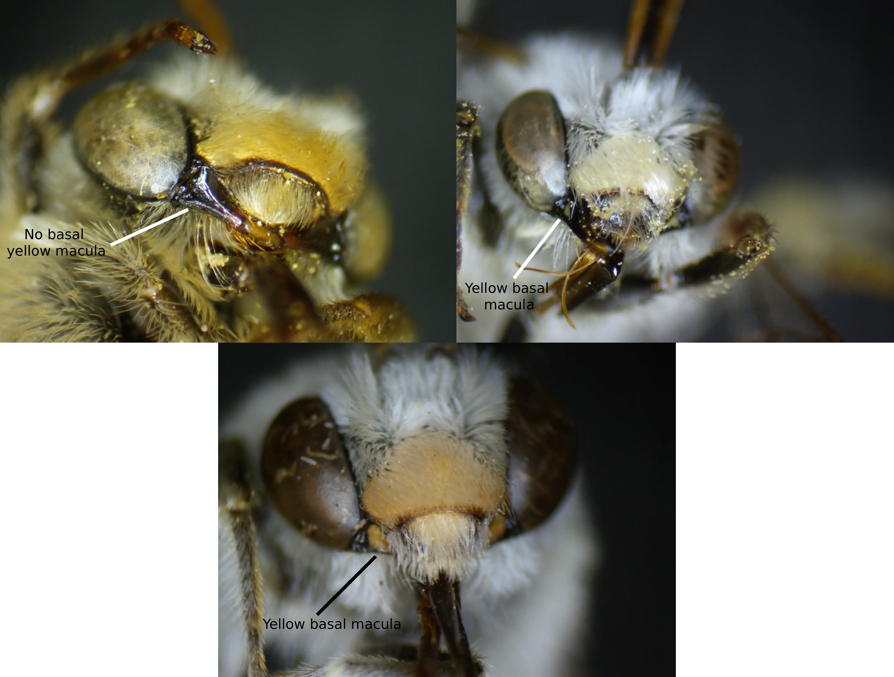
Photo credits: Christopher Wilson (All Rights Reserved). Figure Gallery ➜')">
Fig. 18 A comparison of the mandibular bases among the males of M. bimatris (top left), M. semilupinus (top right), and M. ochraeus (bottom). Photo credits: Christopher Wilson (All Rights Reserved).
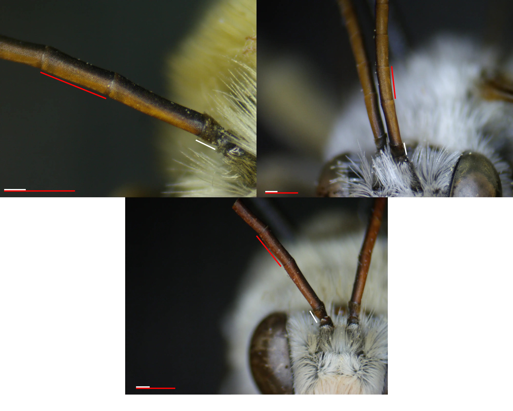
Photo credits: Christopher Wilson (All Rights Reserved). Figure Gallery ➜')">
Fig. 18 A comparison of the ratio of the minimum length of the first flagellar segment to the maximum length of the third flagellar segment among the males of M. bimatris (top left), M. semilupinus (top right), and M. ochraeus (bottom). Photo credits: Christopher Wilson (All Rights Reserved).
Literature Cited
Ikerd H (2019). Bee Biology and Systematics Laboratory. USDA-ARS Pollinating Insect-Biology, Management, Systematics Research. Occurrence dataset https://doi.org/10.15468/anyror accessed via GBIF.org on 2026-03-14.
Kenneth S. Norris Center for Natural History (2026). Kenneth S. Norris Center for Natural History, University of California Santa Cruz, Insect Collection. Occurrence dataset https://doi.org/10.15468/hzkqkp accessed via GBIF.org on 2026-03-14.
The International Barcode of Life Consortium (2026). International Barcode of Life project (iBOL). Occurrence dataset https://doi.org/10.15468/inygc6 accessed via GBIF.org on 2026-03-14.
MT James Entomological Collection, Washington State University (2026). Washington State University Collection. Occurrence dataset https://doi.org/10.15468/c8yk6t accessed via GBIF.org on 2026-03-14.
Bentley A, Osborn R (2026). Snow Entomological Museum Collection. University of Kansas Biodiversity Institute. Occurrence dataset https://doi.org/10.15468/fhntpy accessed via GBIF.org on 2026-03-14.
Gibbs J (2026). J. B. Wallis / R. E. Roughley Museum of Entomology. Version 1.4. University of Manitoba. Occurrence dataset https://doi.org/10.5886/hgagiy accessed via GBIF.org on 2026-03-14.
Illinois Natural History Survey (2026). Illinois Natural History Survey Insect Collection. Occurrence dataset https://doi.org/10.15468/eol0pe accessed via GBIF.org on 2026-03-14.
Carril O, Wilson J, Griswold T, Ikerd H I (2023). Wild bees of Grand Staircase-Escalante National Monument. USDA-ARS Pollinating Insect-Biology, Management, Systematics Research. Occurrence dataset https://doi.org/10.7717/peerj.5867 accessed via GBIF.org on 2026-03-14.
Museum of Southwestern Biology (2026). Museum of Southwestern Biology Division of Arthropods. Occurrence dataset https://doi.org/10.15468/jtovgy accessed via GBIF.org on 2026-03-14.
Texas A&M University Insect Collection (2023). Texas A&M University Insect Collection. Occurrence dataset https://doi.org/10.15468/caprqh accessed via GBIF.org on 2026-03-14.
Gross J, Oboyski P (2026). Essig Museum of Entomology. Version 121.433. Berkeley Natural History Museums. Occurrence dataset https://doi.org/10.15468/0saucj accessed via GBIF.org on 2026-03-14.
University of Arizona Insect Collection (2026). University of Arizona Insect Collection. Occurrence dataset https://doi.org/10.15468/hzkbpg accessed via GBIF.org on 2026-03-14.
Brigham Young University, Arthropod Collection (2026). Brigham Young University Arthropod Museum. Occurrence dataset https://doi.org/10.15468/gqf6no accessed via GBIF.org on 2026-03-14.
Orrell T, Informatics and Data Science Center - Digital Stewardship (2026). NMNH Extant Specimen Records (USNM, US). Version 1.106. National Museum of Natural History, Smithsonian Institution. Occurrence dataset https://doi.org/10.15468/hnhrg3 accessed via GBIF.org on 2026-03-14.
Grinter C, Diaz-Bastin R, Fong J (2026). CAS Entomology Type (TYPE). Version 1.332. California Academy of Sciences. Occurrence dataset https://doi.org/10.15468/gak5hc accessed via GBIF.org on 2026-03-14.
Johnson C (2020). hymenoptera. Version 1.3. American Museum of Natural History. Occurrence dataset https://doi.org/10.15468/mvtuf5 accessed via GBIF.org on 2026-03-14.
Mertz W, Kung G, Xie W (2026). LACM Entomology Collection. Version 5.33. Natural History Museum of Los Angeles County. Occurrence dataset https://doi.org/10.15468/kc9hyp accessed via GBIF.org on 2026-03-14.
LaBerge, W.E. (1961) ‘A revision of the bees of the genus melissodes in north and Central America.
part III (hymenoptera, Apidae)’, The University of Kansas science bulletin, 42(5), pp. 283–663.
doi:10.5962/bhl.part.9821.
Scheinost, P.L., J. Scianna, and D.G. Ogle. 2010. Plant Guide for Rubber Rabbitbrush (Ericameria nauseosa). USDA-NRCS, Pullman Plant Materials Center.
Tilley, D. and L. St. John. 2012. Plant Guide for Yellow Rabbitbrush (Chrysothamnus viscidiflorus). USDA-NRCS, Aberdeen Plant Materials Center.
Tirmenstein, D. 1999. Chrysothamnus viscidiflorus. In: Fire Effects Information System, [Online]. U.S. Department of Agriculture, Forest Service, Rocky Mountain Research Station, Fire Sciences Laboratory (Producer). Available: https://www.fs.usda.gov/database/feis/plants/shrub/chrvis/all.html [2026, March 14].
Kimoto, C., S. J. DeBano, R. W. Thorp, R. V. Taylor, H. Schmalz, T. DelCurto, T. Johnson, P. L. Kennedy, and S.
Rao. 2012. Short-term responses of native bees to livestock and implications for managing ecosystem services in
grasslands. Ecosphere 3(10):88. http://dx.doi.org/10.1890/ES12-00118.1
Foy, Rebecca Jane, "Assessing the foraging habits of two species of long-horned bees (Melissodes, Apidae) using DNA barcodes ITS2 and trnL" (2025). Theses, Dissertations and Capstones. 1970. https://mds.marshall.edu/etd/1970
Nesom, G.L. and Baird, G.I. (1993). Completion of Ericameria (Asteraceae: Astereae), diminution of Chrysothamnus. Phytologia 75(1): 74–93.
University of Minnesota Insect Collection (2026). University of Minnesota Insect Collection. Occurrence dataset https://doi.org/10.15468/ahwyqb accessed via GBIF.org on 2026-03-16.
Northern Arizona University (2026). Northern Arizona University - Arthropod Collection. Occurrence dataset https://doi.org/10.15468/du1hci accessed via GBIF.org on 2026-03-16.
Scott V (2025). UCM Entomology Collection. Version 6.6. University of Colorado Museum of Natural History. Occurrence dataset https://doi.org/10.15468/jsgtns accessed via GBIF.org on 2026-03-16.
Ikerd H, Engler J (2023). Bee Fauna of National Wildlife Refuges in the Pacific Northwest, 2010-2016. USDA-ARS Pollinating Insect-Biology, Management, Systematics Research. Occurrence dataset https://doi.org/10.15468/ppjnys accessed via GBIF.org on 2026-03-16.
How to cite this article:
Hogland, F. E. (2026). Melissodes bimatris.The Melissodes Project.
Latest version available at https://themelissodesproject.wildref.org/melissodes-bimatris.html.